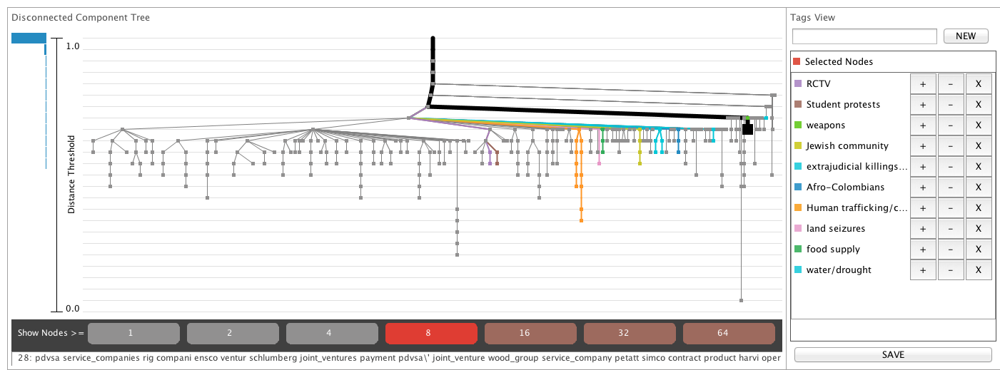
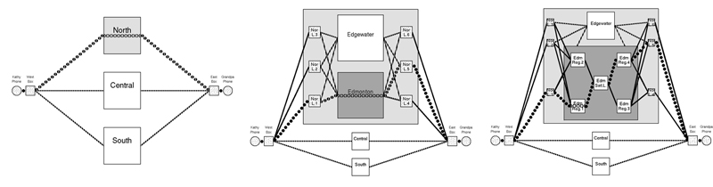

|
VTDP: Drill Down-Close Out with Hierarchical Aggregation
In many big data applications it is not possible to show all entities at once, so they must be aggregated before visualization is possible. The basic interaction is clicking on an object of interest whereupon it opens revealing the visual representations of the objects that it stands for. A reverse operation closes the object. For aggregated objects to be meaningfully used they must visually portray either sufficient information for decision making (aggregated average data may be all that needed in some cases). Aggregated objects must display what Pirolli and Card call information scent, graphical cues to what they contain. One solution is to cause that key information to propagate up using some consolidation method. This provides visual scent for drill down operations. A screen budget combined with the number of data objects can be used to calculate the degree of aggregation necessary.
Example 1: A highly modualarized software system consisting of one million lines of code. At the top level there are 10 large modules, each of these contains 20-50 sub modules, and each of these contains 20-50 software objects. Each object conains 30-200 lines of code. The task is to understand the relationship between components within and between modules; for examaple, which modules are directly connected and how.
Example 2: A large set of news stories is subject to heirarchical semantic aggregation. The task is to find the major news stories we are not looking for. Obtain a conceptual summary of a corpus of documents.
Example 3: A nested social network. Some social networks are nested in the sense that they form highly interconnected local communities, with only weak couplings between communities. These kinds of networks can be easily nested based on community and the nesting may be heirarchical in that large communities may be decombosed into smaller sub-communities.
Example 4: File browser. In this variant a single user or group has manually organized their work into folders and sub-folders.
An overview of the process of drill-down, close-out
Display Environment: Symbols representing aggregations of data.
- Based on a screen budget, the quantity and architecture of the data, the computer creates a hierarchy of entities, each having a visual representation that reveals some aspect of its constituent parts.
- The visualization begins with a display of the top level object.
- The analyst conducts a visual search for informative objects based on some aspect of their visual appearance (visual scent)
- Click on object judged to have the highest probability of yielding useful information.
- If useful information is acquired, save in human or machine memory.
- Close object.
- Repeat from 3.
|
Data budget and Screen budget
Implementation Guideline: The number of on screen objects is likely to be somewhere between ten and a few hundred. Similarly, each object can be an aggregation of between ten and few hundred objects.
Implementation Guideline:Roughly: use aggregation/drill down when there are 3 or fewer levels in the hierarchy and when information scent is high p >0.8. Where p is probability of selecting the right node for drill down based on the information available about that node
Data Guideline: It is essential that there be some semantic basis for categorization. There is little point in dividing a large homegeneous set of entitities into sub groups an arbitrary manner.
Visual Query Support: If the visual scent cue being searched for is pre-attentive then the time to click may be close to constant. If it is not then slow serial search will occur. Often the visual scent is in the form of text labels and search is necessarily serial. Any opportunity to add visual scent can narrow the search and greatly increase cognitive efficiency.
Cognitive Guideline: Aggregration and resulting information scent should relate to cognitive tasks.
Aggregation methods
It is essential that aggregate objects contain and display useful information. In general it is best if the aggregations takes advantage of some inherent structure of the data.
Consolidation principle 1: Statistical summary: Aggregate objects can display basic statistical properties of the component: sum, median, average.
Consolidation principle 2: Exceptions: In some monitoring applications the key information relates to the detection of faults. This information can be propagated upward. The user notices exceptions during the visual search and drills down.
Consolidation principle 3: Temporal Change: In some monitoring applications, any change is of interest. Change information can be propagated upward. A change threshold may be involved.
IMPLEMENTATIONS
Manual Open Close Operations
The most common and simple version of this VTDP is the heirarchical tree browsers. Clicking on a particular node expands the tree to the next level. It is possible to interactively explore even quite large trees with careful attention to layout.
Tree variant
The figure below left
shows the result of heirarchically clustering of the infamous wiki leaks corpus. Various sub categories are highlighted and color coded to reference a table on the right. This support access to particlular topics.
Sometime this kind of tree view is called a dendogram.

E.g. Ingram
Folder Variant
Intelligent Zooming on Graphs
Sometimes networks are inherently heirachically structured. In other cased networks can be heirarchically structured by means of algorithms. In both instances, the drill down close out interaction can be applied.

Implementation:
Dealing with High Degree Nodes
Example: Overview Stray, Karlsson, Munzner, Ingram, Brehmer.
Ingram, S., Munzner, T., & Stray, J. (2012). Hierarchical Clustering and Tagging of Mostly Disconnected Data (Vol. 1). Tech. Rep. TR-2012-01, University of British Columbia Department of Computer Science.
Use Guideline:
Implementation Guideline:
References
Munzner, T., Guimbretière, F., Tasiran, S., Zhang, L., and Zhou. Y. TreeJuxtaposer: Scalable Tree Comparison using Focus+Context with Guaranteed Visibility. SIGGRAPH 2003, 453-462.
|